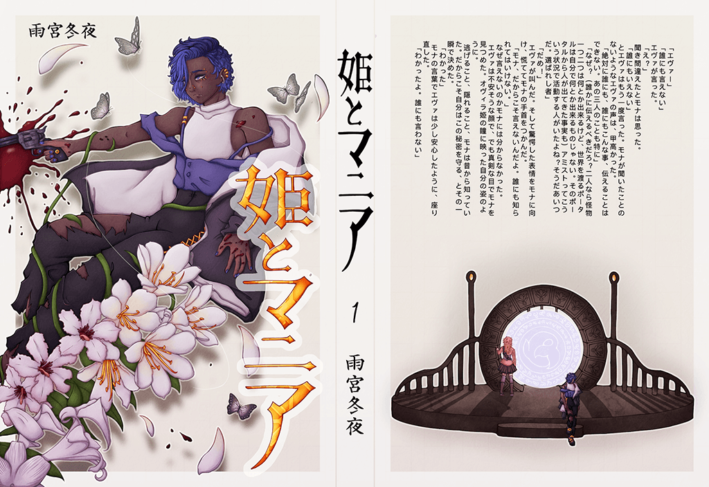

☂︎ Project 2

Alice Tatsumi Rennie is a digital artist, 2D & 3D animator, and writer. Her work consists of character concepts, animated short films, and she has written many original stories. As a current Digital Media Art student at San Jose State University, and prize winner of the Los Altos Rotary Club Young at Art Contest 2022, she plans to someday work as a comic book artist (or mangaka) in Japan.
Alice Tatsumi Rennie is a digital artist, 2D & 3D animator, and writer. Her work consists of character concepts, animated short films, and she has written many original stories. As a current Digital Media Art student at San Jose State University, and prize winner of the Los Altos Rotary Club Young at Art Contest 2022, she plans to someday work as a comic book artist (or mangaka) in Japan.